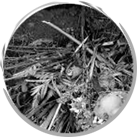
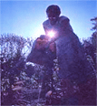

Save earth
 Without the Earth we have no where to live, along with many other organisms. If we
don't save the Earth now maybe our children or grandchildren might not be able to see it for long. Our atmosphere is weakening and we have to do something about it fast. We could plant more trees to create more oxygen to keep the bad air away from the atmosphere, or we could just stop cutting down the rainforest. We are living and we need the space but we aren't the only species on this earth. Saving the rainforest is not only good for us and the atmosphere but also good for the many different species that it homes.
Without the Earth we have no where to live, along with many other organisms. If we
don't save the Earth now maybe our children or grandchildren might not be able to see it for long. Our atmosphere is weakening and we have to do something about it fast. We could plant more trees to create more oxygen to keep the bad air away from the atmosphere, or we could just stop cutting down the rainforest. We are living and we need the space but we aren't the only species on this earth. Saving the rainforest is not only good for us and the atmosphere but also good for the many different species that it homes.
We could try to get as many people as possible to switch to hybrids and other energy saving things to use lessfossil fuel for energy and relying more on solar and wind energy. Fossil fuels are destroying our earth and we need to limit the use of it. Recycling is a great and easy way to help our precious planet. Everyone can help, allthey have to do is follow three simple rules; Reduce, Reuse, Recycle! The world is precious and we need to keep it that way...

10 Things You Can Do to Help Save the Earth
1. Pay attention attention to how you use water. The little things can make a big difference. Every time you turn off the water while you're brushing your teeth, you're doing something good. Got leaky toilet? You might be wasting 200 gallons of water a day [Source: EPA].Try drinking tap water instead of bottled water, soyou aren't wasting all that packaging as well. Wash your clothes in cold water when you can. 2. Leave your car at home. If you can stay off the road just two days a week, you'll reduce greenhouse gas emissions by an average of 1,590 pounds per year [Source: EPA]. Combine your errands -- hit the post office, grocery store and shoe repair place in one trip. It will save you gas and time. 3. Walk or ride your bike to work, school and anywhere you can. You can reduce greenhouse gases while burning some calories and improving your health. If you can't walk or bike, use mass transit or carpool. Every car not on the road makes a difference. If you must drink bottled water, recycle the bottle. 4. Recycle.You can help reduce pollution just by putting that soda can in a different bin. If you're trying to choose between two products, pick the one with the least packaging. If an office building of 7,000 workers recycled all of its office paper waste for a year, it would be the equivalent of taking almost 400 cars off the road [Source: EPA]. 5. Compost. Think about how much trash you make in a year. Reducing the amount of solid waste you produce in a year means taking up less space in landfills, so your tax dollars can work somewhere else. Plus, compost makes a great natural fertilizer. Composting is easier than you think.
NEWS > Save Earth
 A Garden Guide to Saving Seeds Gathering garden seed gives me a feeling of kinship with our ancestors who for centuries depended utterly on home-saved seed. For thou sands of years, harvesting seed was a vital, often sacred, ritual. It was not until the early nineteenth century that seeds were packaged for sale in small envelopes and, soon after, sold through mail-order catalogues. Today, filling out the seed order is a happy duty for the wintered-in gardener. Even so, I never fail to keep and use seeds from certain crops of my own. Why? First, for quality. There are seeds money can't buy. Good ones. One of my favorite tomatoes, for example, is an extra-meaty Italian variety nsobtained from a friend,for which I could never buy seed if I let the strain run out. A home gardener can also create superior cultivars in a back-yard plot. Want bigger fruits or more productive plants? Save seeds from outstanding parents. Want to develop locally adapted strains that will perform better in your particular microclimate? Propagate the seed from your hardiest, most frost-resistant plants. Second, for fun. Gardeners who enjoy experimenting will find a world of challenge and satisfaction in trying different seed-saving and plant-crossing techniques, in watching subtle changes in the varieties they save and in keeping an eye out for unusually good new developments. It was an observant elderly gardener out for a walk who propagated the now popular Henderson Bush Lima — after discovering a volunteer specimen growing by the road. Third, for preservation. When a certain old food-plant variety dies out, we've lost a part of the gene pool from which we might have retrieved valuable traits for breeding into new generations. Some hardy varieties of tomatoes, for instance, have been developed by introducing genes from small-fruited, seemingly worthless wild strains that carried genes for hardiness. Then, too, if you prefer to plant untreated seed, or would like to increase your gardening independence or simply save money, seed saving should be high on your list of skills to learn. And it's not difficult to do.After all, generations of people who had no choice but to be self-reliant managed to keep seeds going with fewer resources and less understanding of the process than we have.Bit of Botany What kinds of seeds should you collect? Eliminate hybrid plants right off the bat. Hybrids are created from two different parents in a special selective (and often intricately mechanical) process unlikely to be duplicated in natural random fertilization. Plants grown from the seeds they produce will not duplicate the good qualities of the original specimens and may, in fact, be greatly inferior. Except for some frankly experimental ventures, seed savers work with open-pollinated (also called standard) varieties. These can be bred true to form by naturally occurring pollination.- Phone: +44-----------
- City: London
- Address: -------------